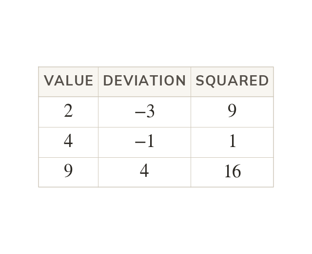
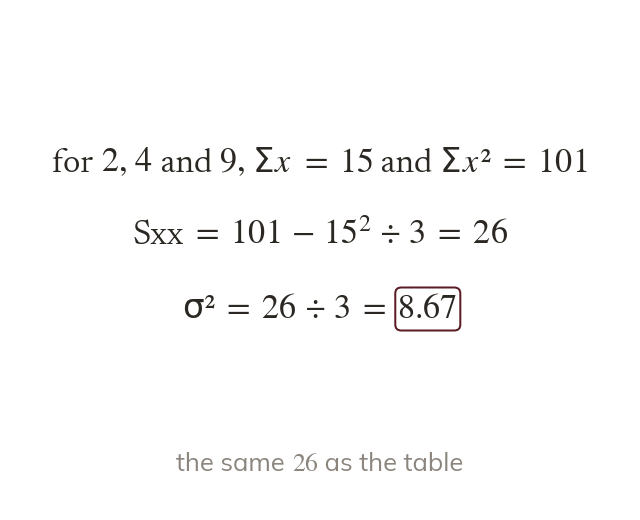
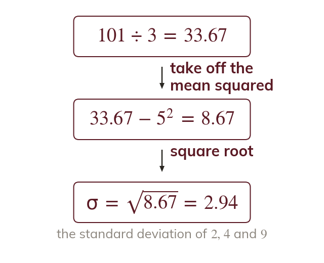
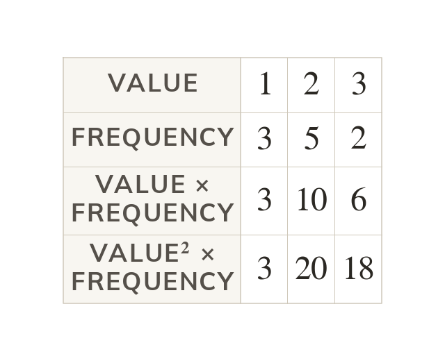
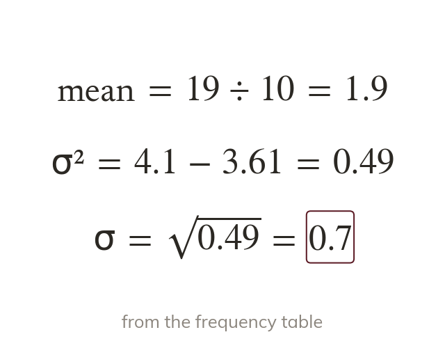
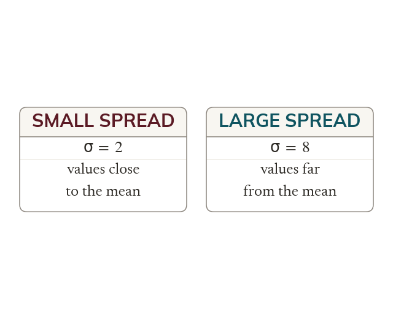
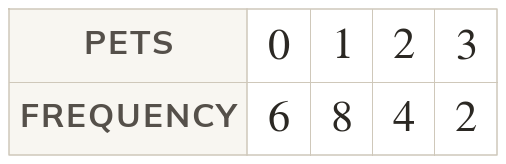
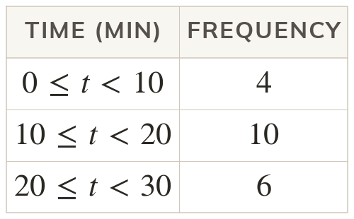

Spread about the mean
The deviation of a value is − x̄, its distance from the mean. The mean of the squared deviations is the variance, σ² = Σ(x − x̄)²/n.
The standard deviation measures how far the data lie from the mean, using every value. It is the spread the normal distribution is built on in chapter and the next lesson finds it more quickly by coding.
Work down the page at your own pace. Write every answer in your book first, then click to check it.
Read each card, then follow the worked examples one step at a time.

The deviation of a value is − x̄, its distance from the mean. The mean of the squared deviations is the variance, σ² = Σ(x − x̄)²/n.

Sxx = Σ(x − x̄)² = Σx² − (Σx)²/n, the sum of the squared deviations. The variance is σ² = Sxx/n, and the standard deviation is σ, its square root.

Another form is σ² = Σx²/n − x̄²
The standard deviation is in the same units as the data.
Pick an answer. If it's wrong, the feedback tells you which mistake it was.
Write the blanks in your book first, then tap each one to check.
Read each card, then follow the worked examples one step at a time.

Each value x appears f times, so use Σfx and Σfx²
The variance is σ² = Σfx²/Σf − (Σfx/Σf)²

Here Σf Σfx and Σfx²
So the mean is and the variance is

For grouped data, x is each class midpoint, so σ is an estimate. A larger standard deviation means the data are more spread out about the mean.


Pick an answer. If it's wrong, the feedback tells you which mistake it was.
Write the blanks in your book first, then tap each one to check.
Finished? Next lesson: S2.5 Coding Data.
For each skill, tap the one that is true for you today. Your Revise pages start with anything you mark Not yet.
Your ratings are saved on this device only.
Log in, then search for a code to practise that skill.